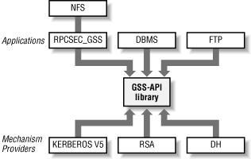

chapter
are essentially refinements of the standard Unix login/password and
file permission constraints, extended to handle distributed
environments. Some additional care is taken to restrict superuser
access over the network, but nothing in RPC's AUTH_SYS
authentication protocol ensures that the user specified by the UID in
the credential structure is permitted to use the RPC service, and
nothing verifies that the user (or user running the application
sending RPC requests) is really who the UID professes to be.
Simply checking user credentials is like giving out employee badges:
the badge holder is given certain access rights. Someone who is not
an employee could steal a badge and gain those same rights.
Validating the user credentials in an NFS request is similar to
making employees wear badges with their photographs on them: the
badge grants certain access rights to its holder, and the photograph
on the badge ensures that the badge holder is the "right"
person. Stronger RPC security mechanisms than AUTH_SYS exist, which
add credential validation to the standard RPC system. These stronger
mechanisms can be used with NFS. We will discuss two of the stronger
RPC security mechanisms available with Solaris 8, AUTH_DH, and
RPCSEC_GSS. Both mechanisms rely on cryptographic techniques to
achieve stronger security.
12.5.2. Brief introduction to cryptography
Before we describe
how the AUTH_DH and RPCSEC_GSS mechanisms work, we will explain some
of the general principles of cryptography that apply to both
mechanisms. A complete treatment of the topic can be found in the
book
Applied Cryptography, by Bruce Schneier
(John Wiley and Sons, Inc., 1996).
There are four general cryptographic techniques that are pertinent:
symmetric key encryption, asymmetric key encryption, public key
exchange, and one way hash functions.
12.5.2.1. Symmetric key encryption
In a symmetric encryption scheme, the
user
knows
some
secret value (such as a password), which is used to encrypt a value
such as a timestamp. The secret value is known as a
secret
key. The problem
with symmetric encryption is that
to get another host to validate your encrypted timestamp, you need to
get your secret key (password) onto that host. Think of this problem
as a password checking exercise: normally your password is verified
on the local machine. If you were required to get your password
validated on an NFS server, you or the system administrator would
somehow have to get your password on that machine for it to perform
the validation. An example of a symmetric key encryption
scheme is the
Data
Encryption Standard (
DES).
12.5.2.2. Asymmetric key encryption
Asymmetric key encryption involves the
use of a public key to encrypt a
secret value, such as a symmetric key, and, a private key to decrypt
the same value. A public key and private key are associated as a
pair. One half of the pair gets generated from the other via a series
of arithmetic operations. The private key is never equal to the
public key, hence the term
asymmetric. As the
names suggest, the public key is well-known to everyone, whereas the
private key is known only to its owner. This helps solve the problem
of getting a secret key on both hosts. You choose a symmetric secret
key, encrypt it with the server's public key, send the result
to the server and the server decrypts the secret key with its own
private key. The secret key can then be used to encrypt a value like
a timestamp, which the server validates by decrypting with the shared
secret key. Alternatively, we could have encrypted the timestamp
value with the server's public key, sent it to the server, and
let the server decrypt it with the server's private key.
However, asymmetric key encryption is usually much slower than
symmetric key encryption. So, typically software that uses asymmetric
key encryption uses symmetric key encryption once the shared secret
key is established
The public key is published so that it is available for
authentication services. The encryption mechanism used for asymmetric
schemes typically uses a variety of exponentiation and other
arithmetic operators that have nice commutative properties. The
encryption algorithm is complex enough, and the keys themselves
should be big enough (at least 1024 bits), to guarantee that a public
key can't be decoded to discover its corresponding private key.
Asymmetric key encryption is also called public key encryption. An
example of an asymmetric key encryption is RSA.
12.5.2.3. Public key exchange
Public key exchange is similar to
asymmetric key encryption in all
ways but one: it does not encrypt a shared secret key with either
public or private key. Instead, two agents, say a user and a server,
generate a shared symmetric secret key that uniquely identifies one
to the other but cannot be reproduced by a third agent, even if the
initial agents' public keys are grabbed and analyzed by some
attacker.
Here is how the shared secret key, also called a
common
key, is computed. The user sends to the server the
user's public key, and the server sends to the user the
server's public key. The user creates a common key by applying
a set of arithmetic operations onto the server's public key and
the user's private key. The server generates the
same key by applying the same arithmetic onto
the user's public key and the server's private key.
Because the algorithm uses commutative operations, the operation
order does not matter -- both schemes generate the same key, but
only those two agents can recreate the key
because it requires knowing at least one private key. An example of a
public key exchange algorithm is
Diffie-Hellman or DH for short.
12.5.2.4. One-way hash functions and MACs
A
one-way hash function takes a string of
octets
of any length and produces a fixed width value called the
hash. The function is designed such that given
the hash, it is hard to find the string used as input to the one-way
hash function, or for that matter, any string that produces the same
hash result.
Let's say you and the server have established a common
symmetric secret key using one of the three previously mentioned
techniques. You now want to send a message to the server, but want to
make sure an attacker in the middle cannot tamper with the message
without the server knowing. What you can do is first combine your
message with the secret key (you don't have to encrypt your
message with the secret key), and then take this combination and
apply the one way hash function to it.
[22] This computation is called a
message
authentication code or
MAC. Then send
both the MAC and the message (not the combination with the secret
key) to the server. The server can then verify that you sent the
message, and not someone who intercepted it by taking the message,
combining it with the shared secret key in the same way you did, and
computing the MAC. If the server's computed MAC is the same as
the MAC you sent, the server has verified that you sent it.
Even though your message and MAC are sent in the clear to the server,
an attacker in the middle cannot change the message without the
server knowing it because this would change the result of the MAC
computation on the server. The attacker can't change the MAC to
match a tampered message because he doesn't know the secret key
that only the server and you know. An example of a one-way hash
function is MD5. An example of a MAC algorithm is HMAC-MD5.
Note that when you add a MAC to a message you are
enabling
the
security
service of integrity.
12.5.4. AUTH_DH: Diffie-Hellman authentication
AUTH_DH is an RPC security flavor
that
uses encryption techniques to improve on AUTH_SYS.
12.5.4.1. Old terms: AUTH_DES, secure RPC, and, secure NFS
AUTH_DH was originally called AUTH_DES, and
indeed, you'll find that most
documentation of AUTH_DH still calls it AUTH_DES. However, the _DES
part of the name is a misnomer. While the DES algorithm is used in
AUTH_DH, as we will see later, it is the Diffie-Hellman algorithm
that is central to the workings of the AUTH_DH. We will not refer to
AUTH_DES again.
When AUTH_DH is combined with RPC, the combination is often referred
to as "Secure RPC." When RPC, and AUTH_DH are combined
with NFS, the result is often referred to as "Secure
NFS." However, in the 13 years since AUTH_DH was invented, two
things have occurred:
-
AUTH_DH is no longer considered secure by many security experts.
After you read the material on AUTH_DH, you might concur.
-
RPCSEC_GSS, a stronger, more secure security flavor for RPC is now
available with Solaris 8 and other NFS implementations.
We will not use the terms "Secure RPC" or "Secure
NFS" again, since they are confusing. Instead, we will use
RPC/DH and NFS/dh to refer to RPC secured with AUTH_DH, and NFS
secured with RPC/DH, respectively.
12.5.4.2. Diffie-Hellman key exchange
AUTH_DH uses Diffie-Hellman public key exchange. Using this
encryption scheme, RPC can be made more secure by requiring each
client to establish a valid common key before making RPC requests to
the server. Diffie-Hellman key exchange relies on each agent that
wants to establish a common key to agree on two pieces of information
beforehand. For AUTH_DH these pieces are:
-
A base for the exponentiation part of the calculation. AUTH_DH uses a
base of 3.
-
A modulus used for the remainder part of the calculation. AUTH_DH
uses a modulus of
0xd4a0ba0250b6fd2ec626e7efd637df76c716e22d0944b88b.
Let's label this constant as AUTH_DH_MOD.
Let PRIV_C be the private key of the client. Then the public key of
the client is:
(1) PUBLIC_C = ( 3 PRIV_C ) mod AUTH_DH_MOD
Let PRIV_S be the private key of the server. Then the public key of
the server is:
(2) PUBLIC_S = ( 3 PRIV_S ) mod AUTH_DH_MOD
The client computes a common key between the client and server as:
(3) COMMON_C_S = ( PUBLIC_S PRIV_C ) mod AUTH_DH_MOD
The server computes the common key between the server and client as:
(4) COMMON_S_C = ( PUBLIC_C PRIV_S ) mod AUTH_DH_MOD
To prove that COMMON_C_S equals COMMON_S_C, we replace PUBLIC_S in
statement (3) with the expression it was derived from in statement
(2) and drop the MOD part of the expression. We do the same for
PUBLIC_C in statement (4) with the expression from statement (2):
(3.1) COMMON_C_S_PRIME = ( 3 PRIV_S )PRIV_C = 3 PRIV_S * PRIV_C
(4.1) COMMON_S_C_PRIME = ( 3 PRIV_C )PRIV_S = 3 PRIV_C * PRIV_S
Because multiplication is a commutative operation, it is obvious that
COMMON_C_S_PRIME equals COMMON_S_C_PRIME. Therefore, COMMON_C_S
equals COMMON_S_C.
12.5.4.3. How RPC/DH works
RPC/DH uses a combination
of
Diffie-Hellman key exchange and DES encryption. User validation is
performed by the server, based on information in the RPC request.
The client and server decide on the common key via the Diffie-Hellman
algorithm discussed previously in
Section 12.5.4.2, "Diffie-Hellman key exchange". The common key will be used to
construct a shared secret DES key. Note that because AUTH_DH_MOD is
192 bits, the common key will be 192 bits. However, DES uses 64 bit
keys, such that the low order bit of each octet is a parity bit,
making DES effectively a 56-bit symmetric key algorithm. AUTH_DH
deals with this by selecting the middle 64 bits of the common key.
These 64 bits are split into eight octets. Parity is added to the low
order bit of each octet. In addition the high order bit of each octet
is unused, making this effectively a 48-bit shared secret key.
The first time the client contacts the server, it generates a random
session key, and encrypts it with the shared secret DES key. The
session key is also a DES key. The client also generates a
time-to-live value (in seconds) called the
window, and a window value that is one second
less than the first window value. The two window values are encrypted
with the session key. The encrypted session key and the encrypted
window values are sent to the server. The server can decrypt the
encrypted session key because it knows the common key, and therefore
the shared secret DES key. With the session key, it can decrypt the
window values. If the second window value is not one less than the
first, the server knows something odd is going on, and it rejects the
client's request.
The first time, and on every subsequent contact to the server, the
client encrypts the current time using the session key. It sends its
RPC request to the server.
The server decrypts the timestamp, using the same session key, and
verifies that it is accurate. If the decrypted timestamp falls
outside of the time to live window, the server rejects the request.
So far we've described how RPC/DH does authentication. We will
now look at how identity works in RPC/DH. Recall that AUTH_SYS sends
a UID, GID, and a list of supplementary GIDs. The first time RPC/DH
contacts the server to establish the session key, it sends no UIDs or
GIDs. Instead it sends a string, called a
netname, which identifies two items:
-
The user (albeit, the username is a UID expressed in ASCII-decimal)
-
The domain name of the user (usually this is an NIS domain name)
The server does three things with the netname:
-
Locates an NIS server serving the specified domain that knows about
the user.
-
Looks up the user's netname in the NIS
netid map for the user's UID, GID, and
list of supplementary groups.
-
Looks up the user's netname in the NIS
publickey map for the user's
Diffie-Hellman public key. With that, and the server's private
key, the server can determine the common key, then the shared secret
key, then decrypt the session key, and use that to verify that the
request came from a user corresponding to the netname.
By the way, notice that AUTH_DH doesn't have the "too
many groups" problem of AUTH_SYS that was discussed in
Section 12.4.1, "RPC security", since no GID list
is sent on the
wire.
12.5.4.4. RPC/DH state and NFS statelessness
The title of the section says it all. How
can
we reconcile the fact that
NFS is stateless, and yet RPC/DH clearly establishes state in the
form of a session key, with a time to live? This state has to be kept
on the server. The answer is that this is not state that has to be
recovered in the event of a server crash, which is in stark contrast
to file locking state. If the server reboots, or if it even decides
to throw away an RPC/DH session, it is not a disaster. The client
simply gets an error indicating that the server has no knowledge of
the session, and the client establishes a new session key as if it
was the first contact between the client and server.
We'll now look at how NFS/dh works by first seeing how to add
the security features to NFS, and then seeing how the public and
private keys are managed within this system.
12.5.4.5. Enabling NFS/dh
Enabling NFS/dh on a filesystem is quite simple: export
and
mount the filesystem with the
sec=dh option. On
the NFS server, the
/etc/dfs/dfstab entry looks
like this:
share -o sec=dh,rw /export/home/thud
When a filesystem is exported with the
sec=dh
option, clients using NFS Version 2 must mount it with the
sec=dh option if they are to enjoy normal user
access privileges in the filesystem. On the NFS client, add the
sec=dh option in the automounter map entry, or
the
/etc/vfstab entry for the filesystem:
automounter auto_home entry:
thud -sec=dh bonk:/export/home/thud
vfstab entry:
bonk:/export/home/thud - /thud nfs - no sec=dh,rw
If the client is using NFS Version 3, it will use Version 3 of the
MOUNT protocol. MOUNT Version 3 will return the RPC security flavor
that the directory is exported with, along with the filehandle of the
directory. Thus, with NFS Version 3, the
sec=dh
mountoption is not necessary.
If a user accessing the filesystem can generate a session key with
the NFS server, it is used to encrypt the timestamps sent with that
user's NFS requests. If the server decrypts the timestamps
successfully, the netname presented by the user is trusted and is
used to derive normal Unix-style credentials for the purpose of file
access.
It's possible, though, that the user can't exchange a
session key with the server. This will be the case if the user
doesn't have a public key defined, or if the user cannot supply
the proper private key to generate a common key using Diffie-Hellman
key exchange. When there is no valid common key, some NFS servers
remap the user to
nobody. However, by default,
Solaris 8 rejects such users. If you want to give such users
anonymous access you can export the filesystem with the following
line in
/etc/dfs/dfstab :
share -o sec=dh:none,rw /export/home/thud
Within the NFS/dh system, a user without a valid public/private key
pair becomes an anonymous user on the NFS server and is subject to
the same access restrictions (discussed earlier in this chapter) that
apply to the anonymous user
nobody. To utilize
NFS/dh without impairing a user's ability to do work, you must
define
public and private key pairs for
trusted users and trusted hosts.
12.5.4.6. Public and private keys
Public and private keys are
maintained in the
publickey.byname NIS map, which is built from
/etc/publickey on the master NIS
server.
[23] The only key that is defined by
default is one for
nobody, which is required for
the anonymous user mapping. Public and encrypted secrets keys are
contained in the
/etc/publickey file, along with
a unique identifier for the machine or user owning these keys.
unix.10461@nesales publickey:privatekey
The keys are long strings of hexadecimal digits, representing the
encrypted key values. Obviously, the NIS map cannot contain the
actual private keys, or the entire encryption mechanism would be
baseless. Instead, the
/etc/publickey
file's
private key field contains the
user's private key, encrypted with the user's login
password. For host entries, the private key is encrypted using the
root password. The private keys themselves are large random numbers,
just like the session key that is used by RPC/DH.
Identifiers in
/etc/publickey are called
netnames and take one of two forms:
unix.uid@NISdomain
unix.host@NISdomain
The first form is used for user keys; it defines a key valid in the
current NIS domain. The host key is used to create a RPC/DH key for
the superuser on the named host. No user key is required for
root -- only a host key.
The
/etc/publickey file is changed by the RPC/DH
utilities that create and manage key values. Because it contains
encrypted key strings, it is not easily edited by the superuser, just
as the password fields in
/etc/passwd cannot be
hand-edited. The
publickey file should exist
only on the NIS master server, or else
users' private keys will become out of date when they change
their passwords (and therefore change the
encryption key used
to store their private keys).
12.5.4.7. Creating keys
The superuser can add
user
keys (on the NIS master server)
using
newkey -u user. As
root, run
newkey with the
user's login name:
nismaster# newkey -u stern
Adding new key for unix.1461@nesales.East.Sun.COM.
Enter stern's login password:
The password is used to encrypt the private key so that it can be
safely placed in the
publickey maps.
Unfortunately, the user's existing password in the NIS
passwd maps must be supplied, requiring you to
know the user's password. This is fine if you are adding the
user to passwd map anyway; he is therefore a new user. However, it is
very inconvenient if you are adding NFS/dh security and have a large
pool of existing users because:
-
You could change every user's login password to the same value.
The problem with that is that for a period of time every user has the
same password, and you can expect that some of your users will take
malicious advantage of that.
-
You could change every user's login password to a unique value.
The problem with that is you have to somehow securely get the new
passwords to each user. Unless you have a secure email system like
PGP or S/MIME installed that pretty much leaves you to walk to every
user's office or telephone them. That you are considering
NFS/dh suggests that you have a large user base. This is simply not
practical.
Hopefully, a future version of Solaris will fix this so that you can
supply any password to
newkey. The way it would
work is that you'd use the same RPC/DH password to encrypt
every private key via newkey. You'd tell your users what the
RPC/DH password is, and they would each use c
hkey
-p (more on
chkey later) to change
the RPC/DH password to match their login password. Once all the users
had done the
chkey, you'd then start
exporting NFS filesystems with NFS/dh.
You cannot achieve the ideal, but you can come close. What you can do
is create a
template user login, with a unique
UID (let's use
66666 for this example) and
GID, and assign it a password that you intend to publish to all your
users. Make sure that
template has a shell of
/dev/null in the
passwd
map, so that no one can log in as
template. Now
create keys for
template :
nismaster# newkey -u template
Adding new key for unix.66666@nesales.East.Sun.COM.
Enter template's login password:
If you look at the
/etc/publickey on host
nismaster you should see something like:
unix.66666@nesales.East.Sun.COM 74365f4e03701cf96de938a59baa39f1039ada407b4ab3a3:9b7130a3f38c6e86f431f81ce1cf64b5e59991d3d5d1ce0596fd5167cb878b51
The netname of
template is
unix.66666@nesales.East.Sun.COM. Each of your
users will have a similar netname, except for the number between the
unix prefix, and the
@nesale.East.Sun.COM suffix. The last long
hexadecimal number after the colon (:) is user
template
's private key, encrypted with
template
's login password.
Now for each user, make a copy of
template
's entry in the
/etc/publickey
file, but change the netname to match the user. Let's say that
your set of users is
stern,
labiaga, and
mre, with
UIDs of 1461, 15124, and 23154, respectively. You then edit the
/
etc/publickey file to look like:
unix.66666@nesales.East.Sun.COM 74365f4e03701cf96de938a59baa39f1039ada407b4ab3a3:9b7130a3f38c6e86f431f81ce1cf64b5e59991d3d5d1ce0596fd5167cb878b51
unix.1461@nesales.East.Sun.COM 74365f4e03701cf96de938a59baa39f1039ada407b4ab3a3:9b7130a3f38c6e86f431f81ce1cf64b5e59991d3d5d1ce0596fd5167cb878b51
unix.15124@nesales.East.Sun.COM 74365f4e03701cf96de938a59baa39f1039ada407b4ab3a3:9b7130a3f38c6e86f431f81ce1cf64b5e59991d3d5d1ce0596fd5167cb878b51
unix.23514@nesales.East.Sun.COM 74365f4e03701cf96de938a59baa39f1039ada407b4ab3a3:9b7130a3f38c6e86f431f81ce1cf64b5e59991d3d5d1ce0596fd5167cb878b51
You now want to push the publickey file changes into the publickey
NIS maps:
nismaster# cd /var/yp
nismaster# make publickey
updated publickey
pushed publickey
You have now almost effortlessly fully populated the
publickey maps, but each entry has the same
public key, same private key, and the same password. This is not what
you want for the long term. So now you tell your users to expend some
effort. Each user should be told to:
-
Change his or her RPC/DH password that the private key is encrypted
with (changing the password to the user's login password is
recommended).
-
Change his or her public and private key.
Here are the instructions we give to each user:
client% chkey -p
Updating nis publickey database.
Reencrypting key for 'unix.1461@nesales.East.Sun.COM'.
Please enter the Secure-RPC password for stern:
Please enter the login password for stern:
Sending key change request to nismaster ...
client% chkey
Updating nis publickey database.
Generating new key for 'unix.1461@nesales.East.Sun.COM'.
Please enter the Secure-RPC password for stern:
Sending key change request to nismaster ...
The first
chkey command invocation reencrypts
his private key with his login password. The second chkey invocation
generates a brand new and unique private key and public key pair.
If the user supplies an invalid password, no password or key will be
created. If the user's password is valid, and the NIS master
server is receiving key updates, the key will be added to, or
modified in, the NIS
publickey maps. Both the
chkey and
newkey utilities
update the
/etc/publickey file on the NIS master
server.
To ensure that your users are following the
chkey instructions, you can check the
publickey.byname map to see if both the private
key and the public key fields of each user have changed, by comparing
them to that of the user
template.
The only way to create host keys (for superuser verification) is to
use
newkey -h as root :
# newkey -h bitatron
Adding new key for unix.bitatron@nesales.East.Sun.COM.
New password:
You must create a host key for every NFS client (so that the client
can mount filesystems shared with
sec=dh) and
NFS server (so that the server can generate the common key).
To receive NIS map updates from
newkey or
chkey, the master NIS server must be able to run
rpc.ypupdated. On Solaris 8, this daemon is
started as part of the
/usr/lib/netsvc/yp/ypstart script, which in turn
is started by the
/etc/init.d/rpc boot script.
On every machine that will be using NFS/dh, make sure you are running
the
keyserv daemon. This process is used to
cache private and common keys, and is also started out of
/etc/init.d/rpc with lines of the form:
if [ -x /usr/sbin/keyserv -a \
-n "'/usr/bin/domainname 2>/dev/null'" ]; then
/usr/sbin/keyserv >/dev/msglog 2>&1
echo " keyserv\c"
fi
As you can see,
keyserv will not start if there
is no domain name established. Make sure
keyserv
can start, or you will not be able to create session
keys, even if you
have a valid public and private key pair in the
publickey NIS maps.
12.5.4.8. Establishing a session key
When you log into a machine that is
running NFS/dh, the password you supply
to
login is used to attempt to decrypt your
encrypted private key (in the
publickey map). If
the login and RPC/DH passwords do not match you get errors like:
Password does not decrypt secret key (type = 192-0) for 'unix.23514@nesales.East.Sun.COM'.
Password does not decrypt any secret keys for unix.23514@nesales.East.Sun.COM.
The private key is given to the
keyserv daemon,
which caches it for generating common
keys. The common keys are used to exchange session keys with NFS
servers, as described earlier in this section. Therefore, the entire
session key generation procedure goes like this:
-
You define a public and private key pair, using
newkey or chkey. The
private key is a large, random number; it is stored in the
publickey map by encrypting it with your
password.
-
When you log into a machine, your password is used to decrypt your
private key. The private key is given to the
keyserv daemon, where it is cached until you log
out.
-
To access an NFS filesystem mounted with the
sec=dh option, you must establish a common key
with the NFS server. You form a common key using your private key and
the public key for the NFS server. This is done automatically by the
RPC/DH system.
-
From the common key, you derive a shared secret key by taking a
subset of the bits of the common key. This secret key is used to
encrypt a randomly generated session key, which is passed to the NFS
server. All of your NFS requests to that server contain a timestamp
encrypted with the session key. The server decrypts this timestamp to
validate your NFS requests.
Note that you must supply your login password for the
keyserv daemon to be given your private key. If
you don't supply a password when you log into a machine --
for example, you
rlogin to another machine
-- then there is no way for the
keyserv
daemon to automatically receive your decrypted private key. To
establish a session key in this situation, use the
keylogin utility, which accepts your login
password and uses it to decrypt your private key:
remote% keylogin
Password:
Note that if your login and RPC/DH passwords are different, whether
you use
rlogin or not, you must use
keylogin to allow
keyserv
to see your private key. Or else you can use
chkey
-p to change your RPC/DH password to your login password.
Keys that are decrypted via
keylogin are also
passed to
keyserv,
where they remain until the user executes a
keylogout. If you are going to be logging into
nontrusted hosts, use
keylogin to decrypt your
key, and add
keylogout to your
.logout file (in your home directory) so that
your key is destroyed when you log out.
You must reference the NIS
passwd map in order
for the automatic private key caching to occur. For proper operation
of NFS/dh, do not put users in the local file
/etc/passwd, or their encrypted private keys may
become out-of-date when they change their local passwords but do not
change the NIS-managed password used to encrypt the private key in
the
publickey map. On the NIS master server,
make sure you use an alternate password source file, instead of the
default
/etc/passwd.
There's one thing missing: how does the root, or host, private
key get decrypted? You establish a session key using the
host key for the NFS server. In order for the
server to exchange keys with you, it must be able to decrypt the
host's private key, and this requires the root password or a
"hidden" copy of the root key. One obvious approach is to
force someone to supply the root password when the machine boots, so
that the host private key in the
publickey map
can be decrypted and given to the
keyserv
daemon. However, this is often too restrictive: if an NFS server
boots and no system administrator is present to supply the root
password, no NFS/dh services will be available.
You can solve this dilemma by using the
-r
option to
keylogin to store the host's
private key in the protected
/etc/.rootkey file
of the NFS server. Note that this is
not the
root password; it's the large, random number used as the
host's private key. When the
keyserv
daemon starts up, it reads the host's key out of this file so
that clients of the host can establish session keys with it.
A similar issue applies to the NFS client when you are using the
automounter to access NFS mounted filesystems. Unless the superuser
has logged into the system, and thus manually established his private
key into keyserv, users will not be able use the automounter to
access filesystems exported with
sec=dh. Once
again, you use
keylogin -r, this time running it
on the NFS client. When the
keyserv daemon
starts up, it reads the host's key out of this file so that the
automounter can establish session keys
on NFS servers.
12.5.4.9. NFS/dh checklist
This list summarizes what you need to do to
create the various daemons and files that must be in place for proper
operation of NFS/dh:
-
Create keys for users with chkey or
newkey -u. Create a host key for each machine on
which you need secure root access using
newkey -h.
-
Make sure the NIS master server is running
rpc.ypupdated.
-
Push the publickey map to all NIS slaves after
making any changes to it, so that NFS/dh is operating before the next
NIS map transfer.
-
Establish a /etc/.rootkey file on every NFS
server and client via keylogin -r.
-
If you are using NFS/dh on trusted hosts, make sure that users
perform a keylogin to produce a temporary
private key. If users do not supply a password when they log into a
host, the local keyserv process on that host
must be given the user's private key explicitly. Also, have
users add keylogout to their
.logout files to remove the temporary keys given
to keyserv.
-
Ensure that each client that is using NFS/dh is running the
keyserv daemon.
-
To export a filesystem using NFS/dh, add the
sec=dh option to its entry in
/etc/dfs/dfstab. On NFS Version 2 clients, mount
the filesystem with the sec=dh option in the
mount options field of the automounter map or
/etc/vfstab.
Finally, make sure that your client and server clocks remain
well-synchronized (see
Section 14.7, "Time synchronization" for a simple
scheme). Since NFS/dh uses encrypted timestamps for validation,
drifting client clocks may cause the server to reject otherwise valid
NFS/dh requests because they appear to be replays of out-of-date
requests. The NFS server code has a small window for checking client
timestamps, and if the clock drift falls within this window, the RPC
call is executed.
On Solaris 8, the default window size is five minutes (300 seconds).
If you are serious about using NFS/dh, you will probably want to
leave this window unchanged. However, you can change it to a
different value, by modifying the
authdes_win
tunable parameter in the
/etc/system file:
* 10 minutes
set rpcsec:authdes_win = 600
You can also set it on a live system without rebooting by:
# echo authdes_win/W 0t600 | adb -k -w
authdes_win: 0x12c = 0x258
The shorter the window, the less time a would-be network spoofer has
to attempt to replay any request, but on the other hand, the less
clock drift you can
tolerate.
12.5.4.10. How secure is RPC/DH?
RPC/DH is flawed for several
reasons:
-
It uses a 192-bit modulus for its public and private keys. In 1987,
192 bits was appropriate because for larger sizes, it was found that
common key generation took several minutes to complete on Motorola
68010 processors, which were still used in a significant number of
Sun's installed base of systems. However, by 1990, advances in
RISC processors produced workstation machines that could, by brute
force, derive the private key from any public key in under a day.
-
It uses only a 48-bit shared secret key for encrypting the session
key. This can be brute forced in less than a day as well.
-
Recall the discussion about requiring users to do a
keylogin if they are using
rlogin between trusted hosts. The point of
rlogin with trusted hosts is to avoid constant
password challenges. Also, the more times the same password is
entered, the more opportunity for someone to look over your shoulder
(or to eavesdrop on the network) to see it.
-
RPC/DH does a better job of authentication than AUTH_SYS, but there
is no support for integrity or privacy. It is obvious why privacy is
desirable, but why is integrity so important to NFS? Say we are using
NFS/dh, and our attacker in the middle intercepts a request to read a
particular file. He prevents the read from proceeding. However, he
takes the RPC/DH header, and concatenates it with a new NFS request
to write the same file (this is known as a splicing
attack). As we discussed earlier in Section 12.5.2.4, "One-way hash functions and MACs", this would not be possible if RPC/DH
had integrity services.
-
It's impossible to extend RPC/DH to fix the above issues.
For these reasons, many security experts will tell you that NFS/dh is
waste of time to deploy, even though the successful attacks on NFS/dh
require the attacker to have much more sophistication than that
needed to attack NFS over AUTH_SYS. If you understand the risks and
you are comfortable with the security offered by one more of:
then you ought to be comfortable with RPC/DH. If you aren't
comfortable with any of the above, including RPC/DH, then you should
be running a very secure combination of directory service and file
service. One combination would be NIS+ with enhanced DH security, as
mentioned in
Section 12.2, "How secure are NIS and NFS?" earlier in this
chapter, and Kerberized NFS as described in the next
section.
12.5.5. RPCSEC_GSS: Generic security services for RPC
The previous section described a complete
security system for NFS and RPC, and the subsection
Section 12.5.4.10, "How secure is RPC/DH?" discusses its flaws. Sun decided to
develop a new RPC security flavor that would address the problems,
with one added feature: it would be infinitely extendable, so that
key size limitations, and problems with cryptographic algorithms
(cryptographers are constantly finding problems with various
algorithms) would not slow development of new security mechanisms.
The new security flavor is called RPCSEC_GSS. Note that it does not
have the AUTH_ prefix like AUTH_SYS and AUTH_DH. This is because it
provides integrity and privacy services in addition to
authentication.
RPCSEC_GSS is based on
the Generic Security Services API
(GSS-API). GSS-API provides the ability to write applications that
can authenticate clients and servers, integrity protect the messages
they exchange, and also privacy protect the messages they exchange.
GSS-API also permits one to "plug in" different security
mechanisms or providers without changing the application that uses
GSS-API.
Figure 12-2 depicts the GSS-API multiplex
applications that are consumers of GSS-API, and mechanisms that are
providers for GSS-API.

Figure 12-2. GSS-API architecture
RPCSEC_GSS leverages GSS-API capabilities to provide authentication,
integrity, and privacy if the security mechanism provider supports
those services. Currently
Kerberos V5 is the mostly widely deployed
GSS-API security provider, and it does support all three services.
NFS over RPCSEC_GSS can use Kerberos V5's capabilities. At the
time this book was written:
-
Solaris (2.6, 7, and 8) was the only known Unix operating system
offering an NFS implementation that supported Kerberos V5 security.
-
At least two PC/NFS implementations -- Hummingbird's
Maestro, and Netmanage's Interdrive -- supported Kerberos V5
security.
12.5.5.1. Kerberos V5
The Kerberos V5 system was developed at the Massachusetts Institute
of Technology. It is another mechanism for enforcing security within
a service, but it differs from RPC/DH in several ways:
-
Kerberos uses multiple levels of DES encryption to exchange keys and
passwords. No public key encryption is used.
-
A Key Distribution Center (KDC
) is required to maintain Kerberos V5 service passwords;
this server must be kept safe from attack to preserve the integrity
of the Kerberos system. RPC/DH uses the
publickey map, which is available to all NIS
clients. The data in the publickey map is
encrypted using user's login passwords, not an additional
RPC/DH password.
-
Kerberos V5 authentication is built into the entire service, or
application, not just into the session layer. For example, you can
use Kerberos to make the line printer spooling daemon secure. Doing
so, however, requires the source code to the line printer
software.
-
Kerberos V5 has the notion of
forwardable credentials. Think back to earlier
in this chapter (see Section 12.5.4.8, "Establishing a session key") when we
talked about rlogin, transparent access, and the
fact that when using NFS/dh, you still had to provide a password to
keylogin even though (or rather, because)
rlogin didn't prompt for one. Kerberos V5
has replacements for programs like rlogin and
telnet that work like that which they replace,
but also support some extra features:
-
Kerberos V5 is used to authenticate
the user, not passwords.
-
Traffic between the client and server is optionally encrypted as a
way to provide privacy protection.
-
Credentials can be forwarded from the client to the server. This
feature, known as a forwardable ticket granting
ticket, allows the following sequence of events:
-
The user logs into his desktop machine. He is prompted for his Unix
login password, which also happens to be his Kerberos V5 password.
This results in a ticket granting ticket (TGT)
being sent from the KDC to his desktop. His home directory is
NFS-mounted but exported with Kerberos V5 security
(sec=krb5).
-
The NFS filesystem uses the TGT to get an NFS
service ticket from the
KDC, which allows the user to be authenticated to the NFS server. The
service ticket is encrypted with the NFS server's key, which
both the KDC and the NFS server know about. The NFS server can
decrypt the service ticket from the client because the server stores
the server's key in its
/etc/krb5/krb5.keytab file, which is analogous to
RPC/DH's /etc/.rootkey file.
-
The user now wishes to log onto a remote system. He uses a Kerberized
version of rlogin to do so, passing a
command-line option that indicates that he wants his TGT to be
forwarded.
-
The NFS filesystem on the remote system must do an NFS mount of the
user's home directory, which is still exported with
sec=krb5. It needs an NFS service ticket to
authenticate the user to the NFS server. Because the TGT has been
forwarded, no password prompt to the user is necessary.
Thus the user, having authenticated himself once when he logged into
his desktop, can roam freely and securely among the network, as he
did in the days when the network was using simple host-based trust
for rlogin and NFS.
12.5.5.2. SEAM: Kerberos V5 for Solaris
Sun's Kerberos V5 implementation is
called
Sun Enterprise Authentication Mechanism (SEAM).
For this chapter to completely explain how to set up SEAM for running
Kerberos V5 and NFS secured with Kerberos V5, it would have to
include as much material as was written in this chapter about NIS and
NFS/dh, and all the chapters leading up to it. In other words, the
title of this book would be
Managing NIS, Kerberos V5, and
NFS. Fortunately, the SEAM documentation is well-written,
and the installation fairly turnkey.
[24] Thus it is not clear that much value could
be added in this book to explain minutiae of SEAM.
However, the rest of this section collects some practical overview
information on SEAM that you might find useful as you approach the
issue of deploying Kerberos V5.
SEAM 1.0 is available for Solaris 2.6 and Solaris 7, and is packaged
with the
Solaris Easy Access Server (SEAS) 3.0
product, which is unbundled from Solaris 2.6 and Solaris 7. If you
bought a server from Sun, you might find SEAS 3.0 preinstalled. At
the time this book was written, SEAM 1.0.1 was available for Solaris
8 as a free download from Sun's website. Look for the product
called
Solaris 8 Admin Pack. Do not attempt to
run SEAM 1.0 on Solaris 8. If you upgrade to Solaris 8 from a Solaris
2.6 or Solaris 7 system that has SEAM 1.0 installed, then you should
immediately install SEAM 1.0.1.
SEAM 1.0 and SEAM 1.0.1 rely on a GUI-based installation technology
that is similar to Installshield for Windows systems. What you do not
want to do is go ahead and install SEAM without reading the
documentation. A couple of notes:
-
SEAM 1.0 comes on the SEAS 3.0 CD-ROM. Install the SEAS 3.0
documentation first, and read through the SEAM 1.0 documentation.
-
SEAM 1.0.1 is part of the Solaris 8 Admin Pack, and at the time this
book was written, the only way to get SEAM 1.0.1 was to download it.
You can download SEAM 1.0.1 separately from the rest of the Admin
Pack. However, be warned that it comes in a self-extracting shell
script, otherwise known as a shar file; the term
shar stands for shell
archive. The shar file
proceeds to run the GUI installer, and the installer does not let you
install the documentation first, because it doesn't have the
documentation. Instead, you first need to download the documentation
separately (which includes all the documentation of the Admin Pack,
so it is a large download). Once you've downloaded the
documentation, start reading it.
There is also documentation on SEAM in the Solaris 8 administration
documents. It is worth reading this as well.
Note that the SEAS 3.0 and Admin Pack documentation are packaged in
the form of web pages.
As you read the SEAM documentation, it should be clear that SEAM and
NIS plus RPC/DH share some parallels, including:
-
Both have master servers (SEAM has a master KDC, and NIS has a master
NIS server).
-
Both recommend one or more slave servers.
-
Both have a distinct client component.
-
Both have a client-side daemon for managing session keys (SEAM has
gssd, RPC/DH has keyserv).
If you read the SEAM 1.0 documentation from the SEAS 3.0 product, the
SEAM 1.0.1 documentation from the Admin Pack, and the SEAM
documentation in Solaris 8, you see that progressive releases of
Solaris, from 2.6 onward, integrate more and more components of SEAM.
Table 12-1 describes the progression so far.
Table 12-1. SEAM progression
|
Solaris Release
|
Unbundled Product
|
SEAM Version
|
Features Integrated with Solaris
|
Features Integrated in Unbundled Product
|
|
Solaris 2.6
|
SEAS 3.0
|
SEAM 1.0
|
RPCSEC_GSS hooks
|
KDC, Remote KDC administration, Kerberized networking utilities,
Kerberos client utilities, RPCSEC_GSS, GSS-API, Kerberos V5 GSS
provider, Kerberos V5 PAM module
|
|
Solaris 7
|
SEAS 3.0
|
SEAM 1.0
|
RPCSEC_GSS, GSS-API
|
KDC, Remote KDC administration, Kerberized networking utilities,
Kerberos client utilities, Kerberos V5 GSS provider, Kerberos V5 PAM
module
|
|
Solaris 8
|
Solaris 8 Admin Pack
|
SEAM 1.0.1
|
RPCSEC_GSS, GSS-API, Kerberos client utilities, Kerberos V5 GSS
provider, Kerberos V5 PAM module
|
KDC, Remote KDC administration, Kerberized networking utilities
|
Presumably the progression in Table 12-1 will
continue with future versions of Solaris and other operating systems.
The fifth column of
Table 12-1 consistently lists
"Kerberized networking utilities." These are utilities
like
rlogin,
rsh,
rcp,
ftp, and
telnet (and their server daemons) that have been
modified to understand Kerberos V5 security. The reason they are
there is that they facilitate the deployment of an Intranet that
sends no passwords in the clear over the wire, and indeed, via
forwardable TGTs, enables you to send no passwords at all. Without
these utilities, there would be less point in having strong NFS
security, since passwords would often appear on your network. This is
another drawback of RPC/DH: it does not add strong security to the
basic networking utilities.
By now, we've mentioned PAM several times without explaining
it. Recall that your RPC/DH password is used to decrypt your private
key. If your RPC/DH password is the same as your Unix login password,
then you don't need to provide your RPC/DH password separately.
How does this happen? The Solaris
login command
has code in it to try to decrypt the user's private key with
the Unix login password. Now suppose you've installed Kerberos
V5 and would like the system to attempt to use the Unix login
password as the key that decrypts your TGT from the KDC. One way
would be for your operating system vendor to change the
login command to do so. But then, you decide
you'd like the
su command and the desktop
lock screen feature to do the same. After a while, it gets to be a
lot of utilities to maintain. A better way is to have pluggable
framework that calls security mechanism specific code in shared
objects and has them take care of acquiring credentials. This is what
PAM does. SEAM provides a Kerberos V5 PAM module. Check out your
system's documentation for information on PAM; PAM is common to
many Unix systems.
Here are some final recommendations for and observations about SEAM
installation:
-
SEAM allows you to use it without DNS running. Don't do that.
If you ever change your mind, you'll have to repopulate the
entire principal (analogous to an RPC/DH
netname) database in the KDC.
-
It is better to install SEAM clients (which can be NFS clients or NFS
servers) by utilizing the preconfiguration steps that the
documentation talks about, and the GUI installer tries to walk you
through. Keep in mind that the preconfiguration information need
only, and should only, be established once, on an NFS server. You
then run the SEAM installer on each host, pointing it at the
preconfigured information on an NFS mounted or automounted filesystem
(usually same filesystem where the installer lives). This reduces
per-host installation tedium.
-
The SEAM documentation is very task-oriented, and hence very
practical. Even if you ultimately want to do things differently,
practice first, and follow the documentation examples as close to
verbatim as possible before you try something complex or a little bit
different.
-
Do not skip any steps. SEAM is rather unforgiving if a small, but
critical step is missed. You'll find that you can cut and paste
from the web-based documentation into your command shell, and if you
make that a habit, you'll stay out of trouble.
12.5.5.3. Enabling Kerberized NFS
This section assumes that you've gone
through the installation and
configuration that the SEAM documentation describes.
Enabling Kerberized NFS on a filesystem is quite simple: export and
mount the filesystem with the
sec=krb5 option.
On the NFS server, the
/etc/dfs/dfstab entry
looks like this:
share -o sec=krb5,rw /export/home/thud
When a filesystem is exported with the
sec=krb5
option, clients using NFS Version 2 must mount it with the
sec=krb5 option if they are to enjoy normal user
access privileges in the filesystem. On the NFS client, add the
sec=krb5 option in the automounter map entry or
the
/etc/vfstab entry for the filesystem:
automounter auto_home entry:
thud -sec=krb5 bonk:/export/home/thud
vfstab entry:
bonk:/export/home/thud - /thud nfs - no sec=krb5
As was the case for enabling NFS/dh (see
Section 12.5.4.5, "Enabling NFS/dh") with NFS Version 3, the
sec=krb5 option is not necessary in the
automounter map or
vfstab entries.
The
krb5 option uses a combination of DES
symmetric key encryption and the MD5 one-way hash function to produce
the RPC credentials that are sent to, and authenticated by, the NFS
server.
Not only is there a
krb5 option to
sec=, but there are
krbi
and
krbp as well.
Like the
krb5 option,
krb5i
uses Kerberos V5 to authenticate users to NFS servers when the
filesystem is exported with
sec=krb5i. Unlike
krb5, it also computes an MD5-based MAC on every
remote procedure call request to the server, and every response to
the client. The MAC is computed on an entire message: RPC header,
plus NFS arguments or results. Thus
krb5i
provides
integrity protection, hence the
trailing
i in
krb5i.
Like
krb5 and
krb5i,
krb5p uses Kerberos V5 to authenticate. Like
krb5i it uses Kerberos V5 to provide integrity.
Unlike
krb5 and
krb5i,
krb5p uses Kerberos V5's DES encryption to
provide privacy. Note that only the NFS arguments and results are
encrypted; the RPC headers go in the clear. So an attacker could
deduce which NFS operation is being performed, but not on what file,
nor what the file or directory
content is.
12.5.5.4. Security and performance
So, why wouldn't a client want
to always mount with
krb5p
? It is, after all, the most secure of
sec= options we've seen in this book. The
reason is that as soon as you involve cryptography in data
processing, you slow down the processing. This is because
cryptography tends to be a highly CPU-bound function. Consider the
performance results in
Table 12-2. The NFS client
and server were each running Solaris 8 with SEAM. Both the systems
were Sun Ultra 5 systems, each with 128 megabytes of RAM, and one 270
Mhz CPU. A 200 megabyte file was written from the client to the
server to the server's
/tmp file system,
via the
mkfile utility. NFS Version 3 over TCP
was used. As we can see from
Table 12-2, the
krb5 option does not cost much to use relative
to
sys. But
krb5i and
krb5p added increasingly significant overhead.
Some people have the reasonable perspective that drop off in
throughput is not as important as the increased CPU utilization.
Table 12-2. Kerberized NFS performance
|
sec= value
|
Throughput in MB/sec
|
Throughput Degradation Relative to sec=sys
|
Percent CPU Utilization on Server
|
|
sys
|
5.40
|
N/A
|
69%
|
|
krb5
|
5.26
|
2.6%
|
70%
|
|
krb5i
|
4.44
|
17.7%
|
77%
|
|
krb5p
|
1.45
|
73.1%
|
99%
|
12.5.5.5. Combining krb5, krb5i, krb5p
You can combine the
krb5 * options with
each other.
Let's suppose
/export/home on server
labrador contains the home directories of
security conscious folks, though some are less paranoid than others.
You can accommodate everyone by adding the following to
/etc/dfs/dfstab:
share -o sec=krb5p:krb5i:krb5,rw /export/home
This means the clients pick any of the three flavors of
krb5 when they mount the NFS filesystem. Note
that this is one instance where even if the client is using NFS
Version 3, that the administrator on the client may want to specify a
sec= option in their automounter maps or
vfstab or on their
mount
command line. The reason is that the client (at least the Solaris 8
client) will pick from the array of security flavors that
mountd returns the first security flavor that
the client supports. So if a client prefers
krb5
but
krb5p is first,
sec= is
needed for the
mount command to override the
automatic choice.
Given the results in
Table 12-2, you might want to
be careful about exporting filesystems with
krb5i or
krb5p security
enabled. If you have data that can go in the clear on the network,
then never export it with
krb5p. If your users
are writing data over the network, and very bad things could happen
if an attacker spliced the RPC header from a
sec=krb5 NFS request onto a forged set of
destructive arguments, then enable
krb5i.
Otherwise
krb5 should be sufficient. Indeed, for
certain kinds of
read-only data,
sec=sys or
sec=none are
fine.
12.5.5.6. IPSec versus krb5i and krb5p
As discussed earlier in
Section 12.5.3, "NFS and IPSec",
IPSec
can provide integrity (AH) and privacy
(ESP) services. If you are enabling AH and ESP then do you need to
use
krb5i or
krb5p ? Note
that the session keys for AH and ESP are derived from per-host keys,
whereas the session keys for
krb5i and
krb5p are derived from per user keys. If you are
paranoid about attacks on hosts to find the IPSec keys, then
you'll want to run
krb5i and
krb5p in addition to AH and ESP. However, it
will cost you double in CPU utilization to do so. In general, it is
not necessary to use
krb5i if AH is used, and
not necessary to use
krb5p is ESP is used.
However, even if AH or ESP is used to protect NFS traffic, it still
makes sense to use
krb5 protection on your NFS
traffic if
you want
strong authentication.